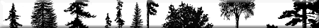
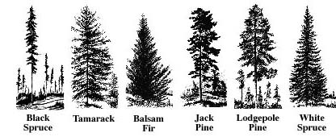

Saskatchewan trees may be classified into two broad categories: evergreen or conifer and deciduous.
| Deciduous | Evergreen |
Balsam Poplar
|  Tamarack
|
Trees can be identified by the features of their parts (e.g.,
leaves, bark, twigs, buds, flowers, and fruits) and by their shape or silhouette. For some
species, a particular feature stands out (e.g., white birch has
a distinctive bark, black spruce has an easily recognizable shape).
Identifying Trees by Their Leaves
Leaves are the most common feature considered when identifying a tree. The leaf itself is comprised of the axil, stipules, petiole and blade.
The shape of a leaf, the kind of leaf margin, the leaf type, and the arrangement of leaves on the twig are all important factors in tree identification.
Deciduous leaves differ in the following manner:
Evergreen or conifer leaves
Evergreen leaves can also be differentiated by shape. For example,
the leaves of the pine are long and needle-like while cedar leaves
are flat and scale-like. Some needle-like leaves occur singly
on the twig; others occur in bunches. White spruce and balsam
fir needles occur singly. Pine has needles in clusters. Jackpine
and lodgepole pine have two needles per cluster.
Summary of Leaf Characteristics
| Deciduous | Conifer |
Identifying Trees by Their Bark
 |
Tree bark can be differentiated according to colour, texture, hardness, and bark patterns. The bark of most trees changes colour and thickens as the tree ages. |
- White birch - creamy white bark peels easily into large sheets, revealing the pinkish-orange inner bark underneath.
- American elms - dark greyish-brown bark that forms long, deep, intersecting ridges (called fissures) .
- Trembling aspen - smooth, waxy looking bark that varies from pale green to almost white.
- Green ash - greyish-brown bark, broken into firm, narrow, slightly raised ridges that have a somewhat diamond shaped pattern.
- Evergreen - bark is full of resin, a substance that sticks to hands and clothing.
- Balsam fir - bark has resin blisters
- Young jackpine - thin, reddish-brown to grey bark
- Mature jackpine - bark becomes dark brown and flaky
Identifying Trees by Their Twigs and Buds
During the winter, twigs and buds can be used to identify
trees. As with the leaves, it is important to notice how the buds
are arranged on the twig (opposite, alternate, or whorled).
Note also the size, colour, stickiness, and hairiness of the
buds.
Identifying Trees by Their Silhouettes or Shapes
General shape or outline of a tree may also be used to differentiate between tree species. Inherited shapes of trees are related to the arrangement and location of buds. Should terminal buds inhibit the growth of lateral buds on a currently developing shoot, this is referred to as apical dominance. Where strong apical dominance exists, there will be little influence on lateral buds from the previous year resulting in a tapered tree. Trees having a weak apical dominance have lateral buds growing at the same rate as the terminal bud resulting in a rounded form. Trees also increase in trunk circumference each year. This growth comes from the cambium layer which is immediately under the bark. The cambium layer produces a new layer of wood to the inside while producing a new bark layer towards the outside.
As they age, trees will naturally prune themselves. When branches get older they begin to droop and eventually the lower branches die. The site where a tree grows and the species occupying it greatly determine the extent of pruning that occurs. Dense stands (trees are crowded together) are particularly subject to pruning through contact and lack of sunlight penetration, causing the foliage to die and branches to fall off.

Typically, trees develop different branch patterns. The characteristic shape of a tree is, therefore, dependent on many factors. Genetics, the relative amount of growth of the trunk, branches and overall site condition contribute to tree shape. The silhouettes of deciduous trees can be equally distinctive in summer or winter.
Examples of identifying trees by their shape:
- Pine trees generally have branches at right angles to their trunks. In sheltered areas, their overall shape is oval. This shape can be contorted by the prevailing winds, often giving a bent and sculpted look.
- The balsam fir tree is almost symmetrical. Firs have branches that tend to bend downward and tapered trunks that give an overall steeple appearance to the silhouette.
- The poplars have a straight, slender trunk which may extend two-thirds of the tree's height into an oval to open crown consisting of stout branches.
- White birch may have a single or multiple stem which curves outward.